CurtainsUK · Owner review · 9 October 2026
A little expertise.
A lot of possibility.
Phase 1 of Meet Our Team: six distinctive AI adviser profiles, with Jane featured, and an interactive waiting-room and consultation-room design demonstration.
Open the Shopify development previewCurrent portrait revision
The current review uses six original synthetic portraits in place of the earlier abstract illustrations. These are fictional adult AI adviser identities, not photographs of real employees. Select an image to open the larger JPG. Read the portrait provenance and exact source prompts.
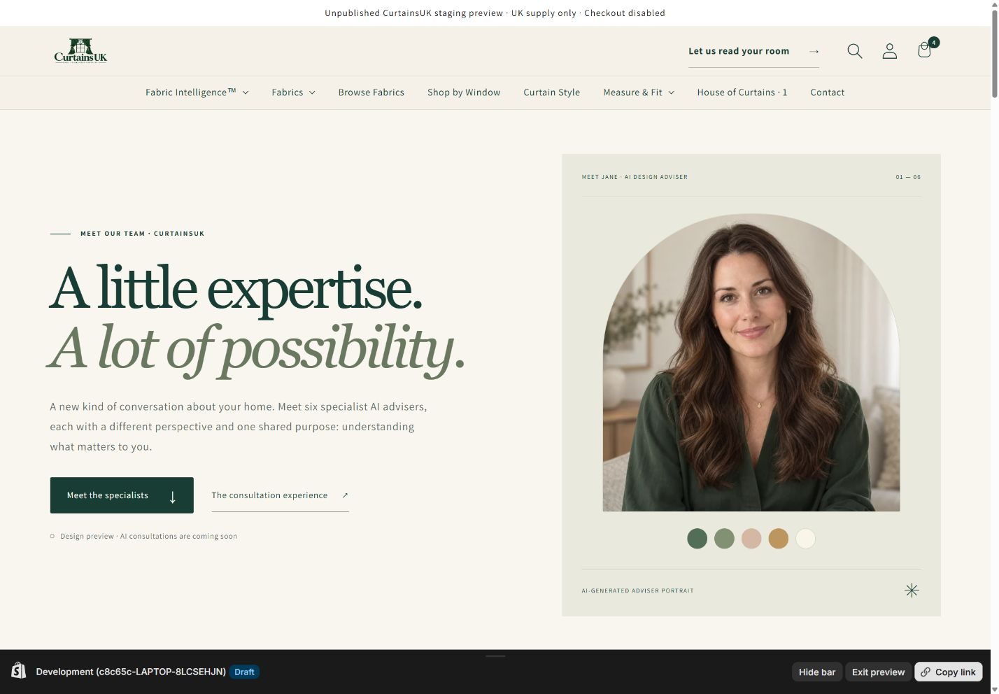
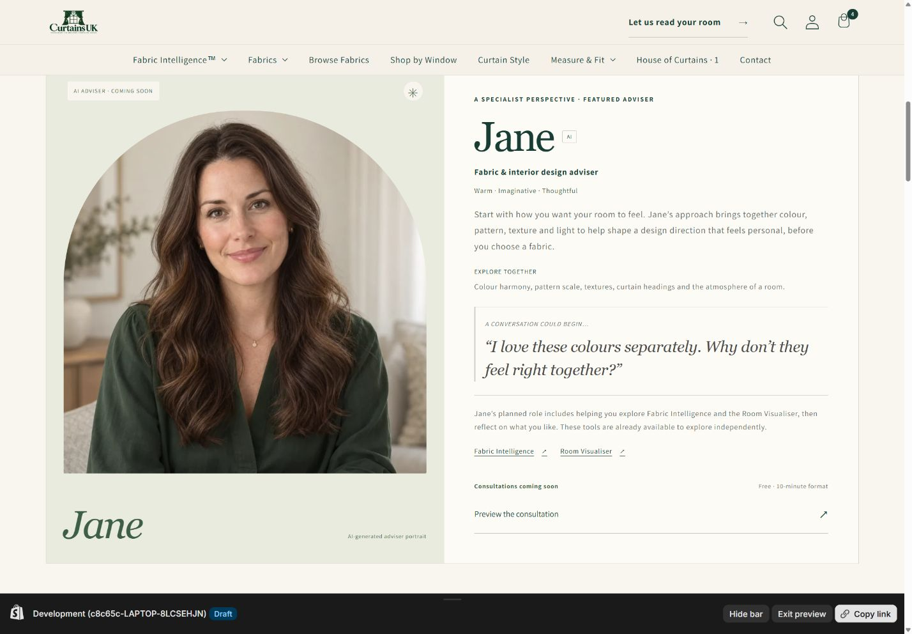
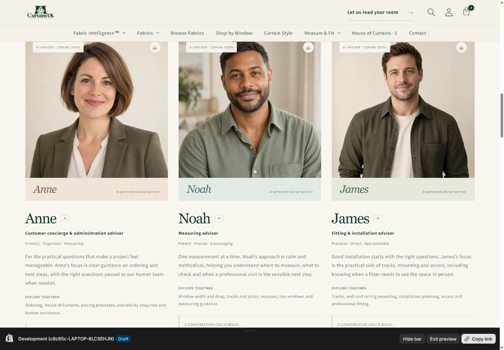
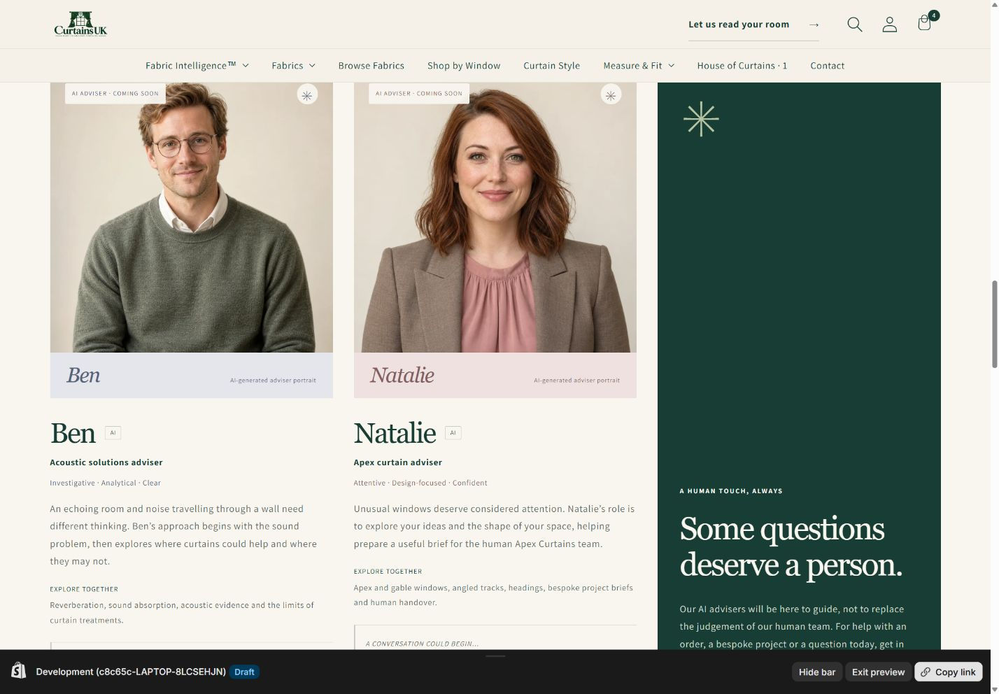
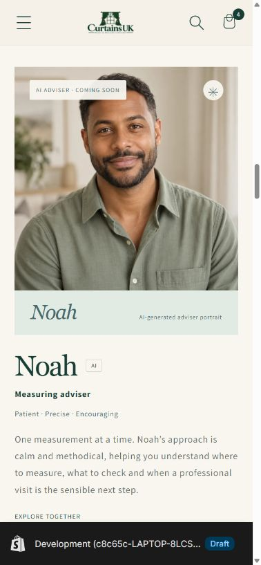
Historical illustrated version — page details
Preserved evidence of the earlier abstract illustrated design, superseded by the portrait revision above. Desktop views show the introduction and six adviser profiles. Select any image to open the larger JPG in a new tab.
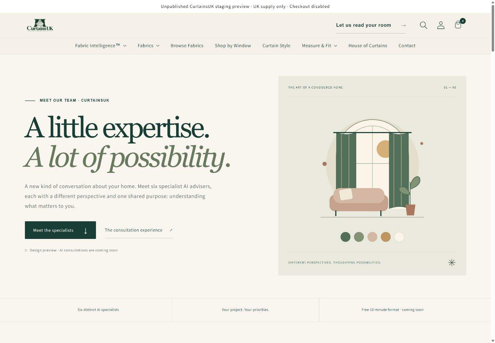
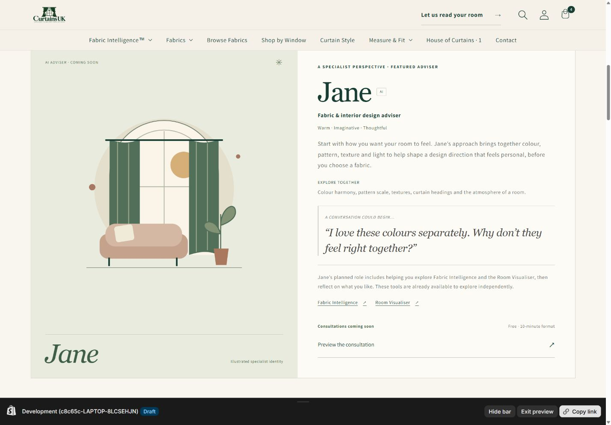
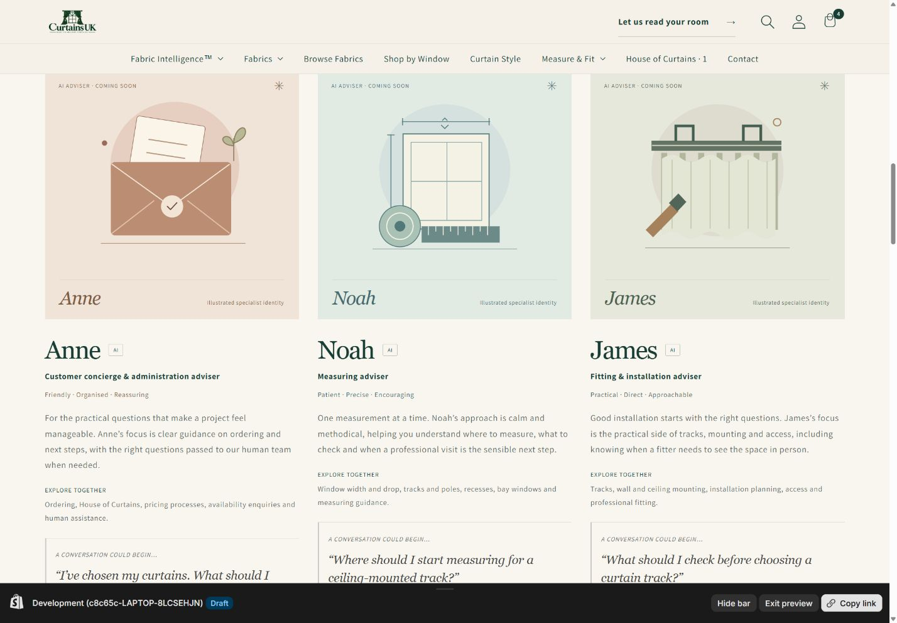
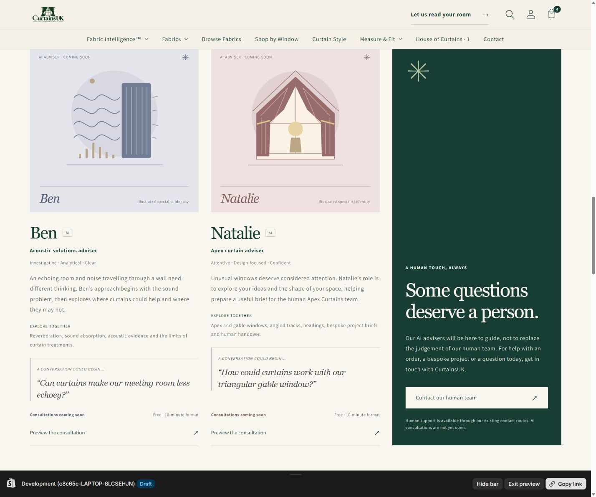
Historical illustrated version — consultation preview
These earlier captures preserve the waiting-room and consultation-room demonstration before the portrait revision. The composer remains disabled. No real queue, customer conversation or operational AI service is represented.
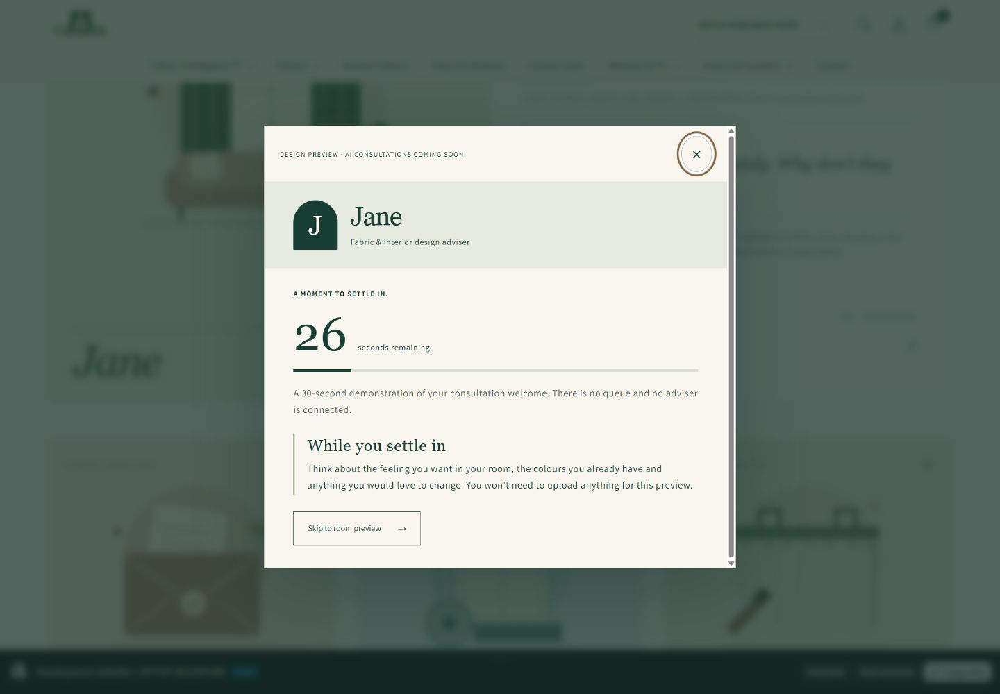
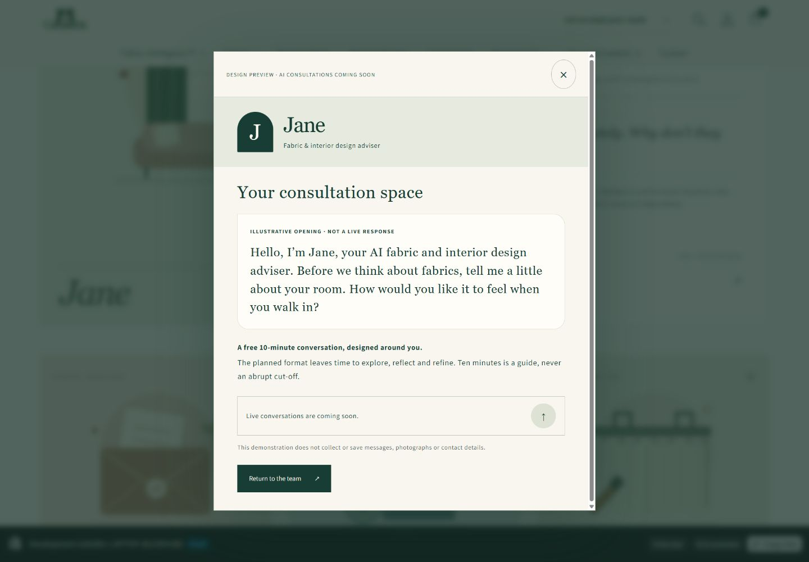
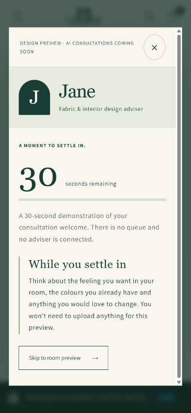
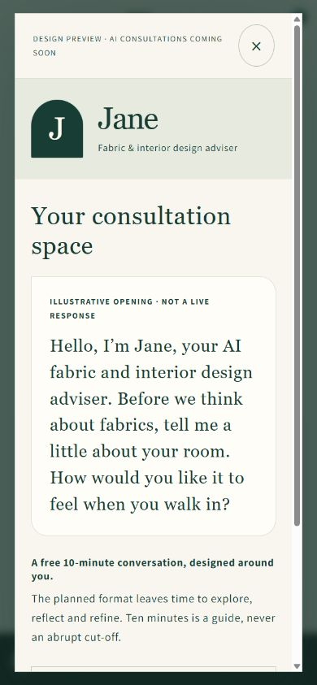
Historical illustrated version — five responsive layouts
Preserved browser views of the earlier illustrated version at each requested CSS viewport width, plus Jane's featured profile on a narrow screen. Scrollbars can make the captured content width slightly narrower than the viewport setting.
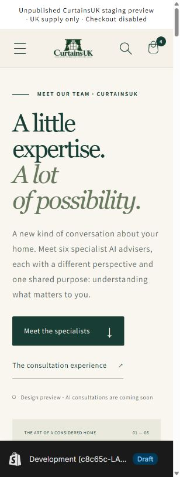
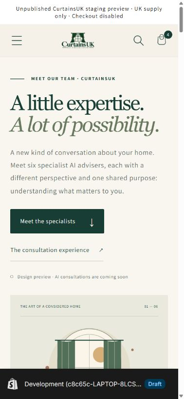
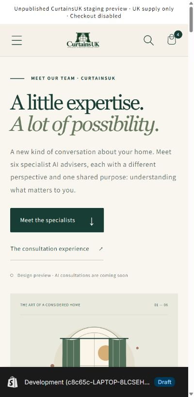
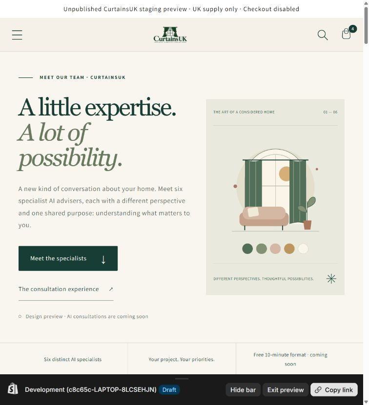
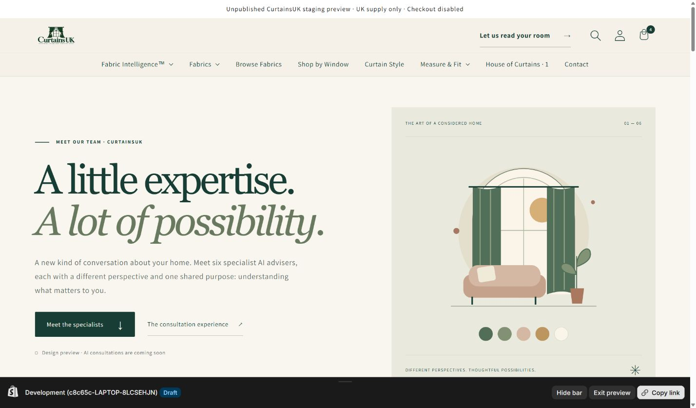
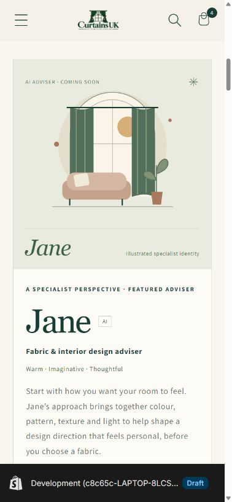